Section Describing Numerical Data
We describe numerical data using measures of center, measures of spread, and graphs. Together, these summaries help us understand a typical value, how much the observations vary, the shape of the distribution, and any unusual observations.
Subsection Measures of Center
Important Properties of the Mean.
-
The mean uses every data value.
-
Changing even one observation changes the mean.
-
An extreme observation can change the mean substantially. The mean is not robust.
-
We use \(\mu\) for a population mean and \(\bar{x}\) for a sample mean.
-
The mean has the same units as the original data.
Example 193 Finding a Mean.
Find the mean of the following data set.
\begin{equation*}
59,\ 44,\ 38,\ 41,\ 67,\ 54,\ 44,\ 62,\ 68,\ 56,\ 61,\ 66
\end{equation*}
Definition 194 Median.
Important Properties of the Median.
-
Always put the data in order before finding the median.
-
If the number of observations is odd, the median is the middle observation.
-
If the number of observations is even, the median is the mean of the two middle observations.
-
The median depends on the middle position or positions, rather than directly using the magnitude of every observation.
-
The median is robust: changing an extreme observation often has little or no effect on it.
-
In these notes, we use \(M\) for a population median and \(m\) for a sample median.
Example 195 Finding Medians.
Find the median of each sample.
-
\(\displaystyle 16,\ 95,\ 22,\ 27,\ 13,\ 49,\ 38,\ 49,\ 64,\ 47,\ 28,\ 13,\ 82,\ 64,\ 49\)
-
\(\displaystyle 51,\ 48,\ 39,\ 37,\ 47,\ 59,\ 48,\ 33,\ 49,\ 32,\ 60,\ 57,\ 51,\ 60,\ 41,\ 46,\ 40,\ 37\)
Subsection Measures of Spread
Measures of center do not tell the whole story. The two illustrative groups below have the same mean and median, 70 beats per minute, but their pulse rates have different amounts of spread.
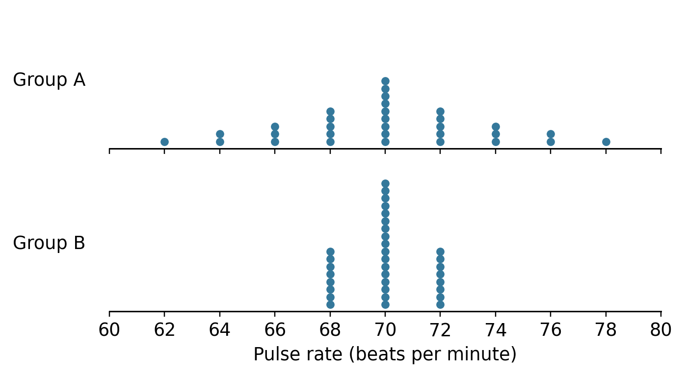
Two stacked dot plots on the same pulse-rate scale. Both distributions are symmetric about 70 beats per minute. Group A ranges from 62 to 78, while Group B ranges from 68 to 72. Group A has greater spread even though both groups have mean and median 70.
One way to study spread is to examine how far the observations are from the mean.
Example 196 Average Distance from the Mean.
Find the mean of the following data set. Then find each observation’s distance from the mean and calculate the average of those distances.
\begin{equation*}
58,\ 72,\ 66,\ 72,\ 90,\ 93,\ 99,\ 100
\end{equation*}
Definition 197 Standard Deviation.
Definition 198 Variance.
Important Properties of Standard Deviation.
-
Standard deviation is never negative. It equals zero only when all observations are equal.
-
Larger standard deviations indicate greater spread around the mean.
-
Standard deviation uses every observation and is not robust.
-
Standard deviation has the same units as the data. Variance has squared units.
-
We use \(s\) for a sample standard deviation and \(\sigma\) for a population standard deviation.
-
The sample variance uses \(n-1\) in the denominator. For independent random observations from a population with finite variance, \(s^2\) is an unbiased estimator of \(\sigma^2\text{;}\) \(s\) is generally a biased estimator of \(\sigma\text{.}\)
Example 199 Sample Standard Deviation.
Find the standard deviation of the following sample data.
\begin{equation*}
58,\ 72,\ 66,\ 72,\ 90,\ 93,\ 99,\ 100
\end{equation*}
Example 200 Population Standard Deviation.
Find the standard deviation of the following data set, treating it as the entire population.
\begin{equation*}
102,\ 75,\ 83,\ 59,\ 64,\ 77,\ 105,\ 78,\ 58,\ 83,\ 82,\ 72
\end{equation*}
Definition 201 Range.
The range uses only the smallest and largest observations, so it is not robust.
Definition 202 Quartiles.
Finding Quartiles by Hand.
-
Order the data from smallest to largest.
-
Find the median, \(Q_2\text{.}\)
-
Split the ordered data into a lower half and an upper half. Exclude the overall median from both halves.
-
\(Q_1\text{,}\) the median of the lower half, and \(Q_3\text{,}\) the median of the upper half.
Definition 203 Interquartile Range (IQR).
Important Properties of the IQR.
-
The IQR describes the spread of the middle 50 percent of the data.
-
The IQR is robust.
-
The IQR does not directly use the magnitude of every observation.
-
The IQR has the same units as the data.
Example 204 Finding Interquartile Ranges.
Find the quartiles and IQR of each sample using the convention above.
-
\(\displaystyle 16,\ 95,\ 22,\ 27,\ 13,\ 49,\ 38,\ 49,\ 64,\ 47,\ 28,\ 13,\ 82,\ 64,\ 49\)
-
\(\displaystyle 51,\ 48,\ 39,\ 37,\ 47,\ 59,\ 48,\ 33,\ 49,\ 32,\ 60,\ 57,\ 51,\ 60,\ 41,\ 46,\ 40,\ 37\)
Subsection Robustness
A numerical summary is robust, or resistant, if a small number of extreme observations have relatively little effect on it.
Return to the data used to find a mean in Example 193. Suppose the largest value, 68, is changed to 168 while all other values stay the same.
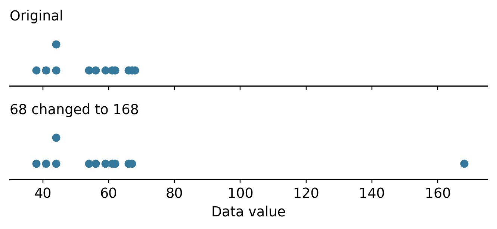
Two dot plots on a common horizontal scale. The original data are clustered from 38 to 68. In the second plot, the observation at 68 moves to 168; the other eleven observations remain in their original positions.
| Data set | Median | IQR | \(\bar{x}\) | \(s\) |
|---|---|---|---|---|
| Original data | 57.5 | 20 | 55.00 | 10.72 |
| 68 changed to 168 | 57.5 | 20 | 63.33 | 34.42 |
Which summaries changed? Which remained the same? Explain how the results illustrate robustness.
Choosing Summaries.
-
For approximately symmetric data without influential outliers, the mean and standard deviation are often useful summaries.
-
For strongly skewed data or data with influential outliers, the median and IQR are often more useful descriptions of a typical value and spread.
Robust does not mean that a summary can never change. Also, an unusual observation is not automatically an error; investigate it before deciding whether to exclude it.
Subsection Histograms
A histogram groups numerical observations into intervals called classes, or bins. Each bar shows how many observations, or what percentage of observations, fall in its interval.
Properties of a Histogram.
-
Choose nonoverlapping intervals that cover all the observations. Use equal class widths for the frequency or percent histograms in these notes.
-
Use evenly spaced tick marks on the horizontal axis. Mark class boundaries or class midpoints consistently.
-
Label the horizontal axis with the variable and its units, when units are known.
-
Use evenly spaced tick marks on the vertical axis and start its scale at zero. Label it Frequency or Percent.
-
Draw bars across the class intervals. Adjacent bars touch at their class boundaries; an empty class has a bar of height zero.
For the examples below, include the left endpoint of each interval and exclude the right endpoint. Include the final right endpoint if needed to include the largest observation.
Example 206 Constructing a Histogram.
Construct a histogram of the following data. Use classes of width 2.
\begin{gather*}
95.7,\ 98.2,\ 98.1,\ 97.4,\ 99.4,\ 94.7,\ 96.2,\ 98.3,\ 90.7,\ 90.5\\
97.9,\ 98.6,\ 98.4,\ 94.8,\ 98.8,\ 92.1,\ 98.9,\ 95.8,\ 96.3,\ 96.7
\end{gather*}
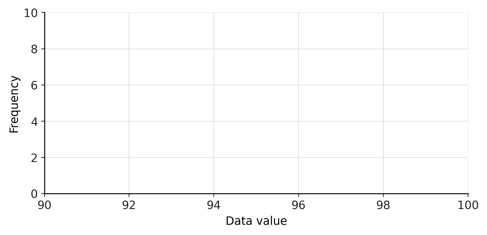
Blank histogram axes. The horizontal axis is labeled Data value, with class boundaries 90, 92, 94, 96, 98, and 100. The vertical axis is labeled Frequency and runs from 0 to 10.
Example 207 Constructing Another Histogram.
Construct a histogram of the following data. Use classes of width 10.
\begin{gather*}
31,\ 82,\ 72,\ 55,\ 11,\ 40,\ 58,\ 63,\ 57,\ 47,\ 24,\ 53,\ 57,\ 33,\ 25,\ 14,\ 45,\ 48,\ 23,\ 64
\end{gather*}
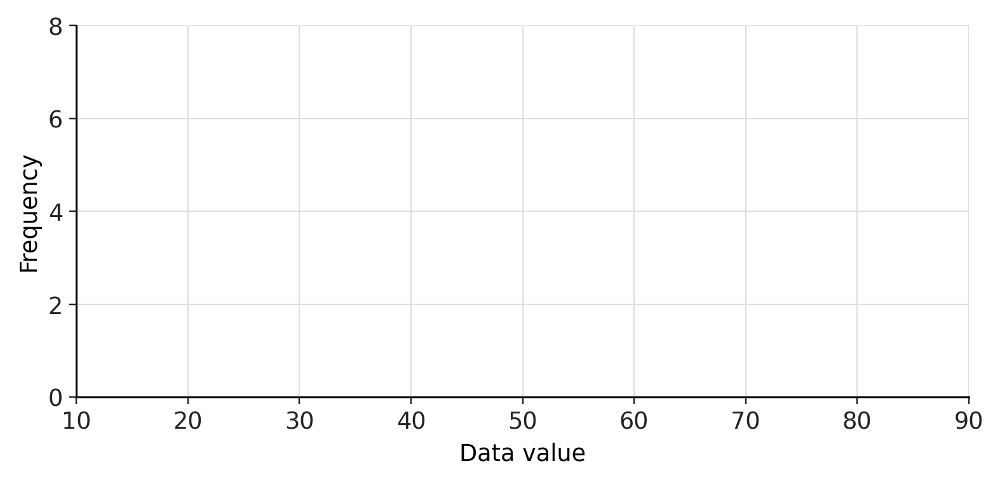
Blank histogram axes. The horizontal axis is labeled Data value, with class boundaries from 10 to 90 in increments of 10. The vertical axis is labeled Frequency and runs from 0 to 8.
Subsection Interpreting Histograms
When describing a histogram, discuss its shape, center, spread, and any unusual features. Look for clusters, gaps, and possible outliers. A histogram can suggest possible recording errors, but the graph alone cannot establish that an observation is incorrect.
Bell-shaped
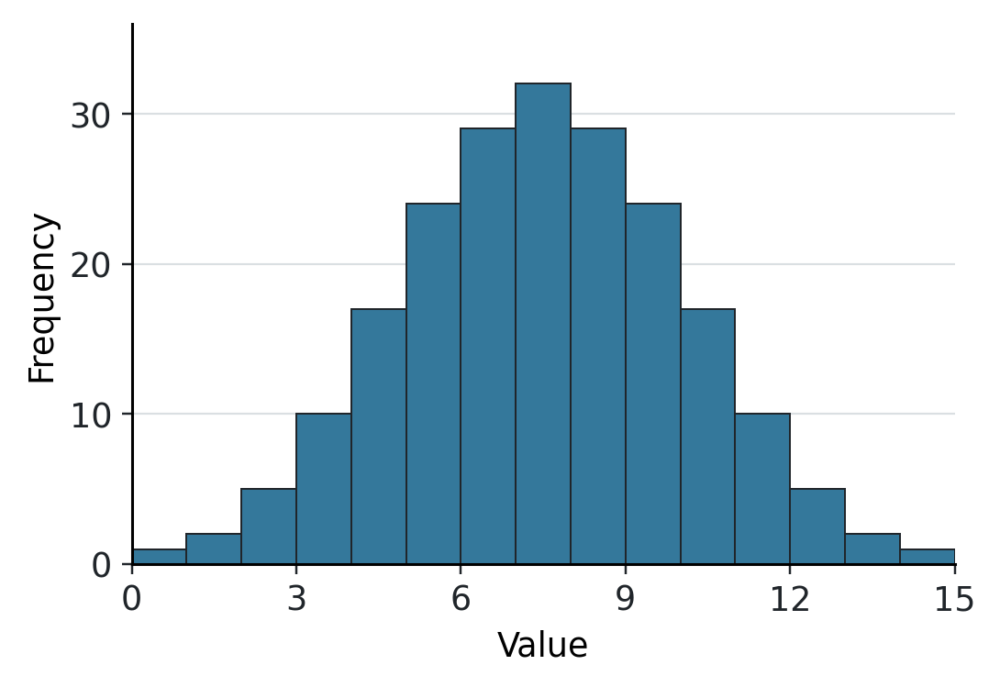
A histogram with one central peak. Frequencies decrease in a roughly balanced way on both sides of the center.
Approximately uniform
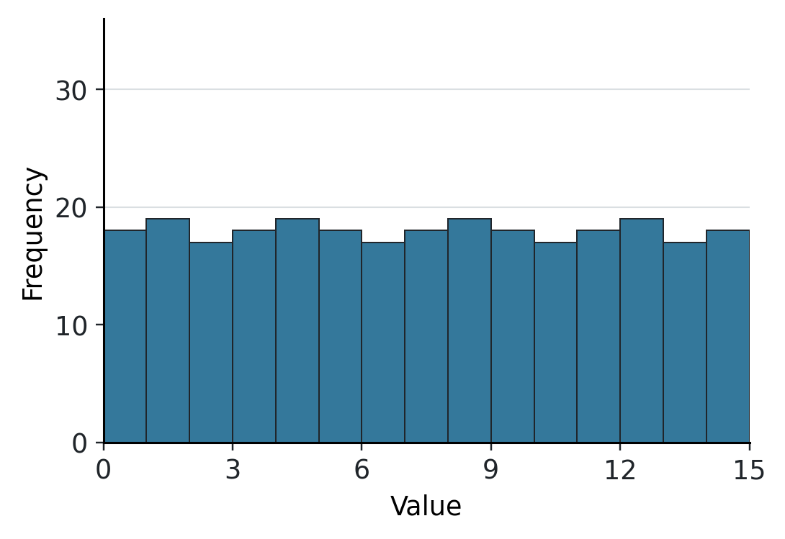
A histogram with bars of approximately equal height across equal-width classes.
Skewed right
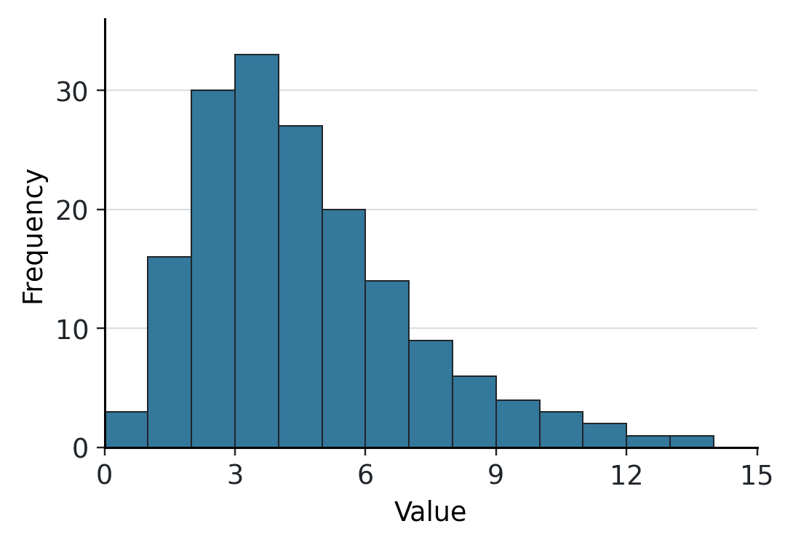
A histogram with most observations at lower values and a long tail extending toward higher values on the right.
Skewed left
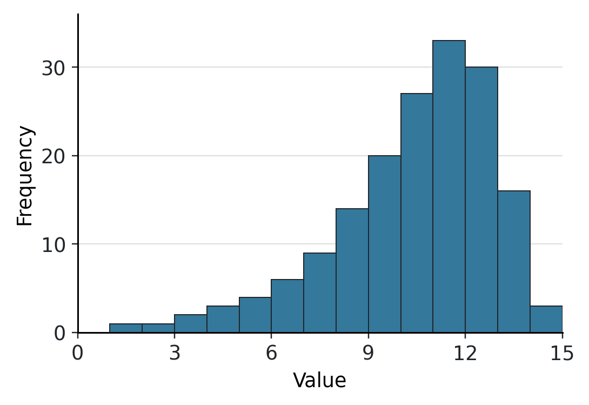
A histogram with most observations at higher values and a long tail extending toward lower values on the left.
Name the Direction of the Tail.
Skewness is named for the direction of the longer tail, not the side containing the tallest bars.
Possible outliers are observations unusually far from the rest of the data.
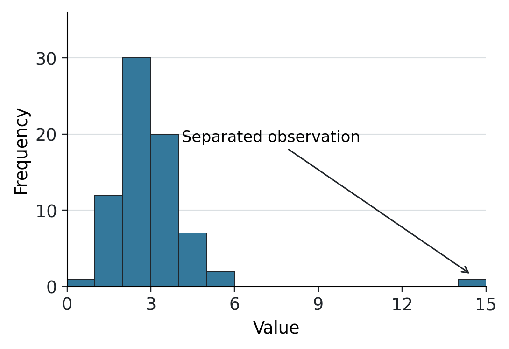
A histogram with most observations in the lower classes and one observation in a far-right class, separated from the main cluster by several empty classes.
Subsection Box Plots
The five-number summary consists of the minimum, \(Q_1\text{,}\) median, \(Q_3\text{,}\) and maximum. A box plot uses quartiles to display a distribution’s center and spread. We will use a modified box plot that displays potential outliers separately.
Properties of a Box Plot.
-
Draw the box plot above a horizontal number line or beside a vertical number line.
-
Use evenly spaced tick marks. Label the scale with the variable and its units, when units are known.
-
Draw the box from \(Q_1\) to \(Q_3\) and draw a line inside the box at the median.
-
Use the outlier fences to identify potential outliers.
-
Extend the whiskers to the smallest and largest observed values that are not beyond the fences.
-
Plot observations beyond the fences individually.
Outlier Fences.
\begin{gather*}
\text{Lower fence}=Q_1-1.5\cdot\mathrm{IQR}\\
\text{Upper fence}=Q_3+1.5\cdot\mathrm{IQR}
\end{gather*}
A potential outlier is strictly below the lower fence or strictly above the upper fence. The fences are cutoff values; they are not necessarily observed data values or whisker endpoints.
The minimum and maximum always belong to the five-number summary, even if they are plotted as outliers. When there are no outliers, the whiskers end at the minimum and maximum.
Example 208 Five-Number Summary and Box Plot.
Calculate the five-number summary and IQR of the following data. Find the outlier fences, identify any potential outliers, and construct a box plot.
\begin{equation*}
199,\ 201,\ 236,\ 269,\ 271,\ 278,\ 283,\ 291,\ 301,\ 303,\ 341
\end{equation*}
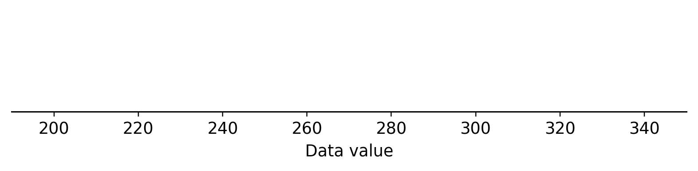
A blank horizontal number line for a box plot. The scale extends from 190 to 350, with labeled tick marks every 20 units from 200 to 340.
Subsection Matching Histograms and Box Plots
Histograms and box plots emphasize different features of the same data. A histogram shows the pattern of frequencies across intervals. A box plot highlights the median, quartiles, spread, and potential outliers.
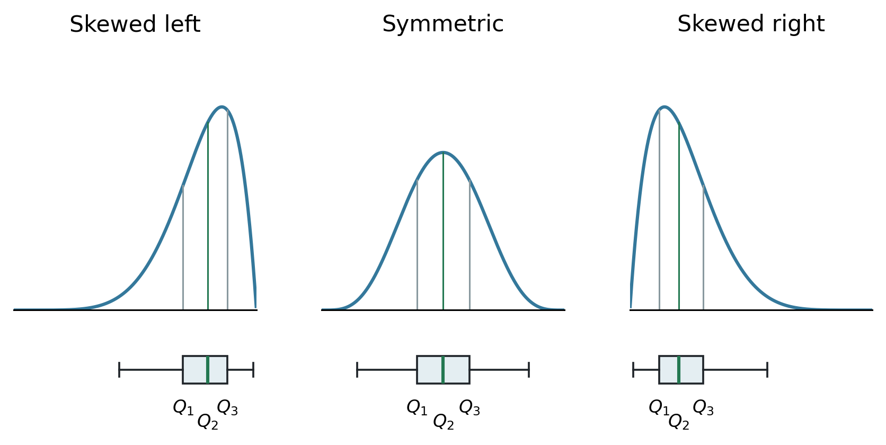
Three schematic distributions with corresponding box plots. The left-skewed distribution has a longer left tail and a box plot extending farther toward smaller values. The symmetric distribution has a centered median and balanced box and whiskers. The right-skewed distribution has a longer right tail and a box plot extending farther toward larger values. The quartiles beneath each curve align with the box and median below it.
-
Compare the centers of the distributions and the locations of the medians.
-
Compare the overall spread and the spread of the middle half of the observations.
-
Look for evidence of a longer tail and for possible outliers.
The patterns in the illustration are typical, not guaranteed. A box plot does not show every detail of a distribution: different histograms can have the same box plot, and peaks or gaps may be hidden.
![Runestone Academy logo]()
![MathJax logo]()